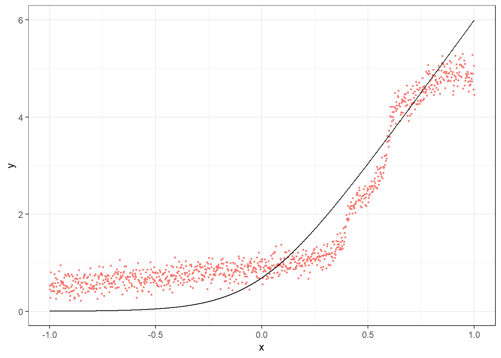
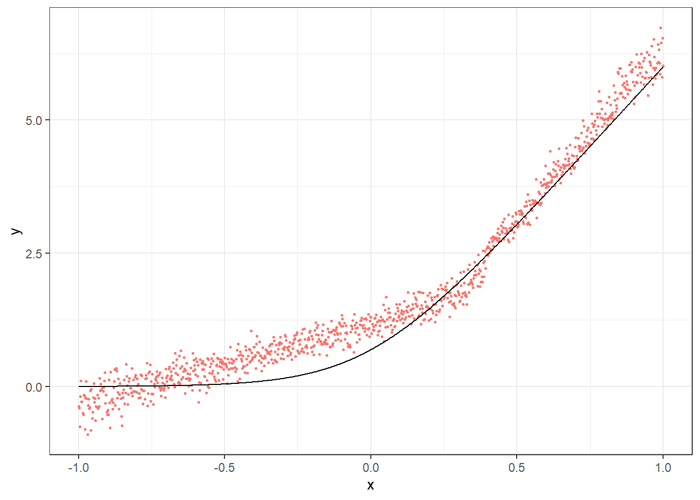
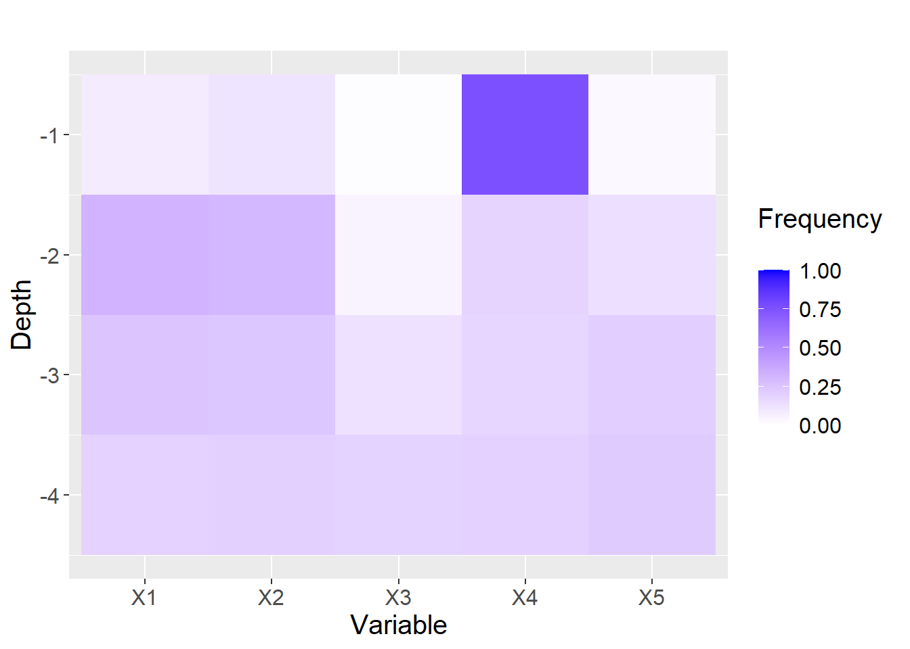
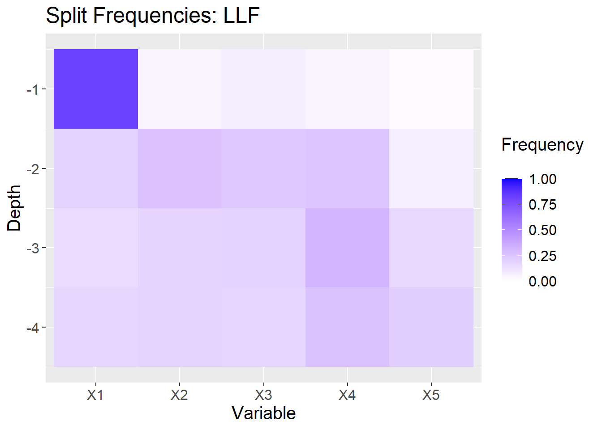
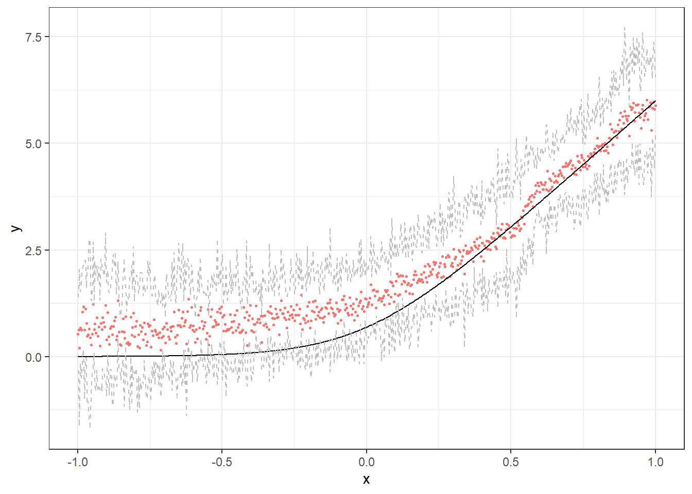

library(grf)
library(glmnet)
library(ggplot2)局部线性森林简介
Introduction to local linear forests · grf 官方教程中译
来源：R 包 grf 官方教程
llf.Rmd（原文渲染版），作者 Julie Tibshirani、Susan Athey、Erik Sverdrup、Stefan Wager 等，采用 GPL-3 许可。 本页为中文翻译，非原文；按 GPL-3 保留原作者署名与许可证，并标明这是修改（翻译）后的版本。 译自 grf 2.6.1（源码修订5bee99b）。 页内代码与图表由本站以 R 4.4.3 + grf 2.6.1 重新执行生成，因随机种子与包版本差异，数值可能与原站略有出入。
本文介绍如何使用局部线性森林（local linear forest，LLF）。我们先讲标准用法，逐一说明参数选择和方法细节，然后讨论如何在更大的数据集上使用局部线性修正。
局部线性森林：基础
随机森林是一种流行且强大的非参数回归方法，但在存在强而光滑的效应时表现会变差。局部线性回归很适合在低维下拟合相对光滑的函数，但会因维数灾难而迅速失效：它依赖欧氏距离，而欧氏距离即使在 4 维或 5 维下也会很快失去局部性。这个算法结合了两种方法各自的长处（随机森林的数据自适应性，以及局部线性回归的光滑拟合），从而给出更好的预测和置信区间。关于局部线性森林（LLF）的完整论述，见我们在 ArXiv 上的论文。
设一个有 \(B\) 棵树的随机森林在测试点 \(x_0\) 上做预测。在每棵树 \(b\) 中，该测试点会落入一个叶节点 \(L_b(x_0)\)。回归森林先对 \(L_b(x_0)\) 中的所有响应取平均，再把这些预测 \(\hat{\mu}_b(x_0)\) 在所有树上取平均。为了换一个角度看随机森林，我们可以交换求和次序，把随机森林看作高维中的一种核方法或加权方法。
\[\begin{align*} \hat{\mu}(x_0) &= \frac1B \sum_{b=1}^B \sum_{i=1}^n Y_i \frac{1\{x_i\in L_b(x_0)\}}{|L_b(x_0)|}\\ &= \sum_{i=1}^n Y_i \frac1B \sum_{b=1}^B \frac{1\{x_i\in L_b(x_0)\}}{|L_b(x_0)|} \\ &= \sum_{i=1}^n \alpha_i(x_0) Y_i, \end{align*}\] 其中森林权重 \(\alpha_i(x_0)\) 是这样一个比例：在多少比例的树里，某个观测与协变量向量的目标取值落在同一个叶节点中。 \[\begin{equation} \alpha_i(x_0) = \frac1B \sum_{b=1}^B \frac{1\{x_i\in L_b(x_0)\}}{|L_b(x_0)|} \end{equation}\]
局部线性森林更进一步：现在我们不再用这些权重在 \(x_0\) 处拟合一个局部均值，而是用它们拟合一个局部线性回归，并加上岭惩罚做正则化。这相当于求解下面的最小化问题，其中的参数为：表示局部均值的 \(\mu(x)\)，以及表示局部直线斜率的 \(\theta(x)\)。 \[\begin{equation} \begin{pmatrix} \hat{\mu}(x_0) \\ \hat{\theta}(x_0) \end{pmatrix} = \text{argmin}_{\mu,\theta} \left\{\sum_{i=1}^n \alpha_i(x_0) \left(Y_i - \mu(x_0) - (x_i - x_0)\theta(x_0) \right)^2 + \lambda ||\theta(x_0)||_2^2\right\} \end{equation}\]
这让我们能够 (i) 在高维中用一个有意义的核做局部线性回归，以及 (ii) 即使存在光滑而强的信号，也能用随机森林做预测。
简单示例
我们先看一个简单的例子，说明局部线性森林在什么情况下能优于随机森林。
p <- 20
n <- 1000
sigma <- sqrt(20)
mu <- function(x){ log(1 + exp(6 * x)) }
X <- matrix(runif(n * p, -1, 1), nrow = n)
Y <- mu(X[,1]) + sigma * rnorm(n)
X.test <- matrix(runif(n * p, -1, 1), nrow = n)
ticks <- seq(-1, 1, length = n)
X.test[,1] <- ticks
truth <- mu(ticks)
forest <- regression_forest(X, Y)
preds.forest <- predict(forest, X.test)$predictions
df <- data.frame(cbind(ticks, truth, preds.forest))
g1 <- ggplot(df, aes(ticks)) +
geom_point(aes(y = preds.forest, color = "Regression Forest"), show.legend = F, size = 0.6) +
geom_line(aes(y = truth)) +
xlab("x") + ylab("y") + theme_bw()
g1
ll.forest <- ll_regression_forest(X, Y, enable.ll.split = TRUE)
preds.llf <- predict(ll.forest, X.test,
linear.correction.variables = 1)$predictions
df.llf <- data.frame(cbind(ticks, truth, preds.llf))
g2 <- ggplot(df.llf, aes(ticks)) +
geom_point(aes(y = preds.llf, color = "Local Linear Forest"), show.legend = F, size = 0.6) +
geom_line(aes(y = truth)) +
xlab("x") + ylab("y") + theme_bw()
g2
LLF 预测的参数
有几处改动需要说明。我们先列出局部线性森林特有的那部分训练参数（用户也可以考虑 regression_forest 的调参参数，它们在这里同样适用）。
| Parameters | Value Options | Default Value | Details |
|---|---|---|---|
| 训练参数 | |||
| enable.ll.split | TRUE/FALSE | FALSE | 可选项，让森林基于岭回归残差进行分裂，而不是使用标准的 CART 分裂。 |
| ll.split.weight.penalty | TRUE/FALSE | FALSE | 若使用局部线性分裂，用户可以指定是按协方差对岭惩罚做标准化（TRUE），还是对所有协变量施加相同的惩罚（FALSE）。 |
| ll.split.lambda | 非负实数 | 0.1 | 分裂时使用的岭惩罚。 |
| ll.split.variables | 协变量下标向量 | 1:p | 分裂回归中使用的变量。 |
| ll.split.cutoff | 0 到 n 之间的整数 | n 的平方根 | 若大于 0，当叶节点达到该大小时，森林在树训练阶段的岭回归中使用整个数据集的回归系数；若等于 0，则在每个叶节点内各做一次回归。 |
| 预测参数 | |||
| ll.lambda | 非负实数 | 默认自动调参 | 预测时使用的岭惩罚。 |
| ll.weight.penalty | TRUE/FALSE | FALSE | 按协方差对岭惩罚做标准化（TRUE），或对所有协变量施加相同的惩罚（FALSE）。 |
| linear.correction.variables | 协变量下标向量 | 1:p | 用于局部线性预测的变量下标子集。 |
训练算法
n <- 600
p <- 20
sigma <- sqrt(20)
mu <- function( x ) {
10 * sin(pi * x[1] * x[2]) + 20 * ((x[3] - 0.5) ** 2) + 10 * x[4] + 5 * x[5]
}
X <- matrix(runif(n * p, 0, 1), nrow = n)
Y <- apply(X, FUN = mu, MARGIN = 1) + sigma * rnorm(n)
X.test <- matrix(runif(n * p, 0, 1), nrow = n)
truth = apply(X.test, FUN = mu, MARGIN = 1)
# regression forest predictions
rforest <- regression_forest(X, Y, honesty = TRUE)
results <- predict(rforest, X.test)
preds <- results$predictions
mean((preds - truth)**2)
#> [1] 8.651616我们既可以在标准回归森林上指定线性修正变量来得到 LLF 预测，也可以从一个 ll_regression_forest 对象得到。参数 linear correction variables 给出最后一步局部回归所用的变量。它可以就是全部变量，也可以只是其中一个子集。
# llf predictions from regression_forest
results.llf <- predict(rforest, X.test, linear.correction.variables = 1:p)
preds.llf <- results.llf$predictions
mean((preds.llf - truth)**2)
#> [1] 5.792562
# llf predictions from ll_regression_forest
forest <- ll_regression_forest(X, Y, honesty = TRUE)
results.llf <- predict(forest, X.test)
preds.llf <- results.llf$predictions
mean((preds.llf - truth)**2)
#> [1] 5.78837权重惩罚
做 LLF 预测时，我们既可以做标准的岭回归（ll.weight.penalty 设为 FALSE），也可以按协方差矩阵做缩放（ll.weight.penalty 设为 TRUE）：\(\hat{\beta}_\text{TRUE} = (X'AX (1 + \lambda))^{-1} X'AY\)。默认值为 FALSE。
results.llf.unweighted <- predict(forest, X.test,
ll.weight.penalty = FALSE)
preds.llf.unweighted <- results.llf.unweighted$predictions
mean((preds.llf.unweighted - truth)**2)
#> [1] 5.78837
results.llf.weighted <- predict(forest, X.test,
ll.weight.penalty = TRUE)
preds.llf.weighted <- results.llf.weighted$predictions
mean((preds.llf.weighted - truth)**2)
#> [1] 5.736676残差分裂
我们还要考虑树的训练在局部线性森林中的作用。标准的 CART 分裂最小化用叶节点整体均值做预测时的预测误差。作为替代，我们可以使用残差分裂，它最小化岭回归残差上对应的预测误差。可以预期，当某些协变量带有强线性信号时，这样做会有帮助：我们不会把森林的分裂浪费在拟合这些信号上，但仍能在最后的回归步骤中发现它们。本质上，由于我们知道后面还有一次局部回归用来预测，这种做法能让森林中的分裂尽可能高效。这目前还是一个实验性功能。
forest <- ll_regression_forest(X, Y)
preds.cart.splits <- predict(forest, X.test)
ll.forest <- ll_regression_forest(X, Y, enable.ll.split = TRUE,
ll.split.weight.penalty = TRUE)
preds.ll.splits <- predict(ll.forest, X.test)
mse.cart.splits <- mean((preds.cart.splits$predictions - truth)^2)
mse.ll.splits <- mean((preds.ll.splits$predictions - truth)^2)
mse.cart.splits
#> [1] 5.771045
mse.ll.splits
#> [1] 4.703251为了弄清它到底为什么有效，我们可以看两个森林的分裂频率图。在每张图中，方块表示树在给定层级（y 轴）上有多少次分裂发生在每个特征（x 轴）上。
p <- 5
XX <- matrix(runif(n * p, 0 ,1), nrow = n)
YY <- apply(XX, MARGIN = 1, FUN = mu) + sigma * rnorm(n)
forest2 <- regression_forest(XX, YY)
max.depth <- 4
freqs <- split_frequencies(forest2, max.depth = max.depth)
d <- data.frame(freqs)
dm <- data.frame(variable = sort(rep(names(d), nrow(d))),
value = as.vector(as.matrix(d)),
depth = rep(1:max.depth, p))
# normalize value by sum of value at depth
for(i in 1:max.depth){
tot.depth <- sum(dm[dm$depth == i,]$value)
dm[dm$depth == i,]$value <- dm[dm$depth == i,]$value / tot.depth
}
g<- ggplot(dm, aes(x = variable, y = -depth, fill = value)) +
geom_tile() +
xlab("Variable") +
ylab("Depth") +
scale_fill_gradient(low = "white", high = "blue",limits = c(0,1), "Frequency \n") +
ggtitle("") +
theme(text = element_text(size = 15))
g
ll.forest2 <- ll_regression_forest(XX, YY, enable.ll.split = TRUE,
ll.split.weight.penalty = TRUE)
freqs <- split_frequencies(ll.forest2, max.depth = max.depth)
d <- data.frame(freqs)
dm <- data.frame(variable = sort(rep(names(d), nrow(d))),
value = as.vector(as.matrix(d)),
depth = rep(1:max.depth, p))
for(i in 1:max.depth){
tot.depth <- sum(dm[dm$depth == i,]$value)
dm[dm$depth == i,]$value <- dm[dm$depth == i,]$value / tot.depth
}
g2 <- ggplot(dm, aes(x=variable, y=-depth, fill = value)) +
geom_tile() +
xlab("Variable") +
ylab("Depth") +
scale_fill_gradient(low = "white", high = "blue", limits = c(0,1), "Frequency \n") +
ggtitle("Split Frequencies: LLF") +
theme(text = element_text(size = 15))
g2
LLF 预测
岭回归参数的选择
用户可以选择指定岭回归参数 ll.lambda。如果用户不设置这个变量，它会由自动参数调优来选出。一般来说，我们建议让森林自己调这个参数，或者自己写一个交叉验证循环。只有数据集非常大时才例外。
results.llf.lambda <- predict(forest, X.test,
ll.lambda = 0.1)
preds.llf.lambda <- results.llf.lambda$predictions
mean((preds.llf.lambda - truth)**2)
#> [1] 5.771045
results.llf.lambda <- predict(forest, X.test) # automatic tuning
preds.llf.lambda <- results.llf.lambda$predictions
mean((preds.llf.lambda - truth)**2)
#> [1] 5.771045线性修正变量的选择
尤其是在协变量很多的时候，把局部回归限制在少数几个关心的特征上是合理的。我们推荐使用 lasso。
# Train forest
forest <- ll_regression_forest(X, Y)
# Select covariates
lasso.mod <- cv.glmnet(X, Y, alpha = 1)
lasso.coef <- predict(lasso.mod, type = "nonzero")
selected <- lasso.coef[,1]
selected
#> [1] 1 2 4 5
# Predict with all covariates
llf.all.preds <- predict(forest, X.test)
results.all <- llf.all.preds$predictions
mean((results.all - truth)**2)
#> [1] 5.800366
# Predict with just those covariates
llf.lasso.preds <- predict(forest, X.test,
linear.correction.variables = selected)
results.llf.lasso <- llf.lasso.preds$predictions
mean((results.llf.lasso - truth)**2)
#> [1] 4.81568逐点置信区间
最后来看方差估计和置信区间，它们与 grf 的方差估计类似。为了便于可视化，这里使用第一个数据生成过程。
mu <- function(x){ log(1 + exp(6 * x)) }
p <- 20
X <- matrix(runif(n * p, -1, 1), nrow = n)
Y <- mu(X[,1]) + sigma * rnorm(n)
X.test <- matrix(runif(n * p, -1, 1), nrow = n)
ticks <- seq(-1, 1, length = n)
X.test[,1] <- ticks
truth <- mu(ticks)
# Select covariates
lasso.mod <- cv.glmnet(X, Y, alpha = 1)
lasso.coef <- predict(lasso.mod, type = "nonzero")
selected <- lasso.coef[,1]
selected
#> [1] 1
ll.forest <- ll_regression_forest(X, Y, enable.ll.split = TRUE)
results.llf.var <- predict(ll.forest, X.test,
linear.correction.variables = selected,
estimate.variance = TRUE)
preds.llf.var <- results.llf.var$predictions
variance.estimates <- results.llf.var$variance.estimates
# find lower and upper bounds for 95% intervals
lower.llf <- preds.llf.var - 1.96*sqrt(variance.estimates)
upper.llf <- preds.llf.var + 1.96*sqrt(variance.estimates)
df <- data.frame(cbind(ticks, truth, preds.llf.var, lower.llf, upper.llf))
ggplot(df, aes(ticks)) +
geom_point(aes(y = preds.llf.var, color = "Local Linear Forest"), show.legend = F, size = 0.6) +
geom_line(aes(y = truth)) +
geom_line(aes(y = lower.llf), color = "gray", lty = 2) +
geom_line(aes(y = upper.llf), color = "gray", lty = 2) +
xlab("x") + ylab("y") + theme_bw()
关于更大数据集的说明
虽然局部线性森林通常比普通随机森林更好，但当维数非常高时，用它来训练和预测都可能很慢。原因是：有 n_train 个训练点和 n_test 个测试点时，我们要做 n_test 次回归，每次用 n_train 个数据点。不过，有时我们仍然想用随机森林并修正线性趋势。这种情况下（数据集大约有 10 万条及以上观测，当然始终要看具体场景），挑选少量线性修正变量就特别重要。当前的岭参数调优也会慢得无法接受，因此我们建议：统一把该值设为 0.01，在数据的一个子集上调优，缩小候选取值范围，或者用少量浅树做交叉验证。
| Parameters | Value Options | Default Value | Performance as n,p increase |
|---|---|---|---|
| 训练参数 | |||
| enable.ll.split | TRUE/FALSE | FALSE | 当 n 和 p 很大时，每个叶节点里的 岭回归会特别耗时。因此我们建议 要么不使用该功能，要么仔细设置 下面讨论的调优参数。另请注意， 这仍然是一个实验性功能。 |
| ll.split.weight.penalty | TRUE/FALSE | FALSE | 不受影响 |
| ll.split.lambda | 非负浮点数 | 0.1 | 不受影响 |
| ll.split.variables | 协变量下标向量 | 1:p | 当 p 很大（超过 50）时，建议把 ll.split.variables 限制在一个子集上， 使用 CART 分裂，或者设置一个 足够大的分裂阈值（见下）。 |
| ll.split.cutoff | 0 到 n 之间的整数 | n 的平方根 | 增大该参数可以加快 LL 分裂的速度， 推荐给希望在大数据上训练森林时 使用 LL 分裂的用户。 |
| 预测参数 | |||
| ll.lambda | 非负浮点数 | 默认自动调优 | 在大数据集上默认调优会花很长时间， 我们建议自己写一个更短的交叉验证循环， 或者把 ll.lambda 直接设成 0.1 左右的默认值， 而不是使用自动调优。 |
| ll.weight.penalty | TRUE/FALSE | FALSE | 不受影响 |
| linear.correction.variables | 协变量下标向量 | 1:p | 随着 n、p 增大，限制线性修正变量 是提高预测效率的关键一步。这种情况下， 我们强烈建议用 lasso、逐步回归、 先验知识等方式，为 LLF 预测挑选 数量较少的线性修正变量。 |
下面的代码目前设置为不运行；用户可以预期它大约需要 5-6 分钟。用全部 p 个变量做 LLF 预测会非常慢，在这个数据规模下自动调优同样很慢。不过，我们仍然可以使用线性修正，只是参数要设置得更小心。用户可以增加树的数量，让两种方法的表现都更好。
# generate data
n <- 5e5
p <- 20
sigma <- sqrt(20)
f <- function(x){
10 * sin(pi * x[1] * x[2]) + 10 * (x[3] - 0.5)**2 + 10 * x[4] + 5 * x[5]
}
X <- matrix(runif(n * p, 0, 1), nrow = n, ncol = p)
Y <- apply(X, MARGIN = 1, FUN = f) + sigma * rnorm(n)
X.test <- matrix(runif(n * p, 0, 1), nrow = n, ncol = p)
truth.test <- apply(X.test, MARGIN = 1, FUN = f)
ptm <- proc.time()
forest <-regression_forest(X, Y, tune.parameters = "none", num.trees = 50)
time.train <- (proc.time() - ptm)[[3]]
ptm <- proc.time()
preds.grf <- predict(forest, X.test)$predictions
mse.grf <- mean((preds.grf - truth.test)**2)
time.grf <- (proc.time() - ptm)[[3]]
ptm <- proc.time()
ll.forest <- ll_regression_forest(X, Y, tune.parameters = "none", enable.ll.split = TRUE ,num.trees = 50)
time.train.ll <- (proc.time() - ptm)[[3]]
ptm <- proc.time()
lasso.mod <- cv.glmnet(X, Y, alpha = 1)
lasso.coef <- predict(lasso.mod, type = "nonzero")
selected <- lasso.coef[,1]
selected
time.lasso <- (proc.time() - ptm)[[3]]
ptm <- proc.time()
preds.llf <- predict(ll.forest, X.test,
linear.correction.variables = selected,
ll.lambda = 0.1)$predictions
mse.llf <- mean((preds.llf - truth.test)**2)
time.llf <- (proc.time() - ptm)[[3]]
cat(paste("GRF training took", round(time.train, 2), "seconds. \n",
"GRF predictions took", round(time.train.ll, 2), "seconds. \n",
"LLF training took", round(time.grf, 2), "seconds. \n",
"Lasso selection took", round(time.lasso, 2), "seconds. \n",
"LLF prediction took", round(time.llf, 2), "seconds. \n",
"LLF and lasso all in all took", round(time.lasso + time.llf, 2), "seconds. \n"))
# GRF training took 342.14 seconds
# LLF training took 215.64 seconds
# GRF predictions took 20.25 seconds
# Lasso selection took 15.10 seconds
# LLF prediction took 45.40 seconds
# LLF and lasso all in all took 60.50 seconds
cat(paste("GRF predictions had MSE", round(mse.grf, 2), "\n",
"LLF predictions had MSE", round(mse.llf, 2)))
# GRF predictions had MSE 0.81
# LLF predictions had MSE 0.69